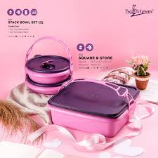
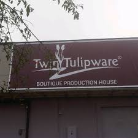
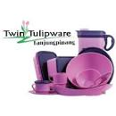
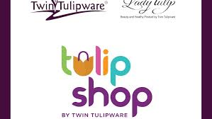

Bahan baku Twin Tulipware telah
sistem anti microbial pada saat
digunakan untuk mencetak produk.
Bahan baku yang digunakan untuk membuat
produk-produk Twin Tulipware memiliki
daya tahan bentur yang cukup tinggi.
Twin Tulipware hanya menggunakan
bahan-bahan transparan yang bebas BPA
|  |  |
NEWS AND EVENTS
|
|||
|  |  | ||||